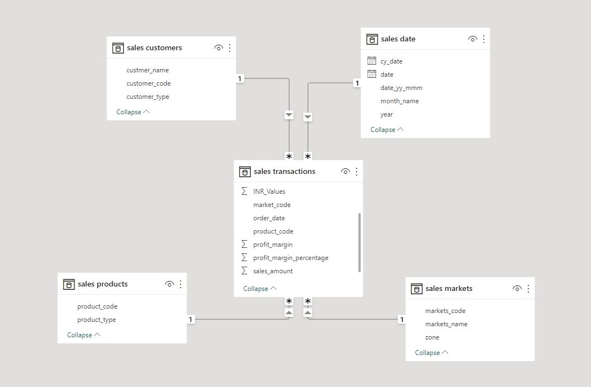

AtliQ Hardware supplies computer hardware and peripherals to various clients across India and has a head office in Delhi and regional offices throughout India.
Bhavin Patel, the sales director of the company, is facing challenges in tracking the sales in the dynamically growing market and getting insights into his business.
The regional managers tend to give verbal feedback that paints a rosy picture and provide complex Excel files, making it challenging for Bhavin to get a clear picture of the business.
Bhavin wants simple and digestible insights, such as the top five customers, the weakest regions, and the year-to-date revenue, etc,. to make data-driven decisions for the business.
The ultimate goal is to improve the declining sales and make informed business decisions based on real-time data analytics.
PowerBI can provide a solution to visualize the data and present simple and actionable insights for Bhavin.
P.S. The problem statement is virtual and doesn’t relate to any real-world entity, any such occurence is just a matter of coincidence.
Project Planning and Data Discovery
Project planning using AIMS grid.
Bhavin patel who is a sales director of at Atliq hardware realizes the pains of getting sales insights and thinks of having a data analytical solution for this problem.
He calls a couple of people like an IT head or a head of data department and schedules a meeting on how exactly we should do this data analytics project.
Together with IT head, he also gathers other stake holders in the room together and they brainstorm on project planning using AIMS grid.
AIMS grid
AIMS grid is a project management tool having four components.
First component is Purpose
Determining what is the pain point and what needs to be done to resolve the pain point
Second component is the Stakeholders
In this project who all will be involved
The main stakeholders involved for this data analytical projects are the marketing team ,the sales team who is facing these issues to do proper sales analysis
IT team (The Falcons) a group of software engineers that AtliQ hardware has who manages all the software requirements of Atliq
The data analytics (The Data Masters) team which is inhouse
Third component is the end result i.e., once the project is over what needs to be achieved
For the data analytics project the end result is to have a power bi dashboard something that our sales director or even Regional Managers can go and look into and it gives you a real-time information on the sales numbers
Fourth component is the success criteria after the project is over, how do we define that the project was successful
In our project scenario the success criteria would be, we want the costs to go down by 10% on management of these sales data
We want to utilize the saved business time by the use of dashboard to take data driven descisions and increase the growth of company by let’s say 10%
Dashboards uncovering sales order insights with latest data available
Sales team able to take better decisions and prove 10% cost savings of total spend
Sales Analysts stop data gathering manually (merging excel files) in order to save business time and reinvest it value added activity
Other Important points
Falcons team, manages the software of Atliq Sales Management which is keeping track of all the sales number so whenever they sell any computer or any hard days in any local region this software is printing the invoice so it has all the records stored in a MySQL database.
Data Masters team will reach out to Falcons and to use the AtliQ SQL database because this is the database which has all the records that we need for our analytics and what we’ll do is we’ll integrate MySQL. We will use MySQL as a source in our power bi tool and we will build dashboard on top of it.
Real World Scenarios
In real world direct access of data from IT team is not allowed cause if the data volume is high we want to make sure that MySQL database is not affected by the queries that Falcons are doing in your PowerBi, so many times companies, have a Data Warehouse as part of the Data Ecosystem.
MySQL which is also known as OLTP which is online transaction processing system it is a very critical system and a company cannot afford for that system to go down otherwise the regular sales operations gets hampered.
For any business analytics is important but then it’s a secondary thing so what companies do is they pull the data from OLTP which is MySQL in our case they do all the transformation which is also called ETL which means extract transform and load and after doing that transformation they store the data in a data warehouse.
There are various types of Data Warehouse management tools like Snowflake and there are various ways to transform the data like using Pandas or other data processing libraries.
Most companies working on huge data analytical projects have another in-house teams who manage the data warehouse known as Data Engineers (The Data Miners).
Conclusion & Data Discovery
Assuming our data is not that big, the data is simply taken from the Falcons, by our Data Masters.
The Data Masters will plug PowerBI directly to SQL database and build the necessary analytical dashboard. Also some times data analysts will spend their time to capture information for analytics, which might not be available in the organization at all. But for this project we will not do that.
Once the Data Masters have the data, they do data cleaning (data wrangling) and data merging (data munging), all this can be done via specialized software. But our data being simple we will do it via PowerBi itself.
Data Cleaning and Data Merging or Wrangling
Load the data in SQL taken from the Falcons team
Find Basic Insights about the data in SQL.
Find out few inconsistencies in data in SQL itself and make a note to remove them in PowerBI later.
Do the ETL in PowerBi
First Load the data
Do the data modelling, i.e., link the tables well, along with their relationships.
Start data transformations on the data to make it good enough for the data analysis.
Once the ETL is done, now start building the dashboards
Basic Insights from DB
DB_Schema
Code
from IPython import displaydisplay.Image("./images/DB_Schema.jpg")# Can use  but it works out of zsh

DB_Queries
Customers Table
Get the total number of customers doing business with AtliQ hardwares
Insights: There are total of 38 customers doing business with AtliQ hardwares
SELECT count(*) FROM sales.customers;
Get count of customers according to their types
Insights: Only 2 customer types i.e. of Brick Mortar and E-Commerce
SELECT count(cs.customer_code) as total_customer_per_type, cs.customer_type
FROM sales.CUSTOMERS as cs
GROUP BY cs.customer_type;
Checking unique customers in the customer category.
Insights: All the 38 customers are unique
SELECT COUNT(DISTINCT tb.custmer_name) as total_unique_customer_name_count
FROM
(
# Seeing whether each customer_code belongs to unique customer name or not. :- It does.
SELECT cs.custmer_name, COUNT(cs.customer_code) as total_unique_customer_names
FROM sales.customers as cs
GROUP BY cs.custmer_name
) as tb;
Date Table
Insights: Total unique dates : 1126 and that is the total dates in the table itself.
SELECT (count(distinct dt.date)) as total_unique_dates
FROM sales.date as dt;
Insight: Seeing the trend of number of transactions each year
SELECT dt.year, count(dt.year) as total_transactions_in_each_year
FROM sales.date as dt
GROUP BY dt.year;
Insights: We have on average 30 transactions per month in each year
SELECT
dt.month_name,dt.year,count(dt.month_name) as transactions_per_month_per_year
FROM
sales.date AS dt
GROUP BY dt.year, dt.month_name;
Market table
Insights: Total of 17 markets each having it’s own unique identifier code
SELECT count(mk.markets_name)
FROM sales.markets as mk;
Inconsistency:
There are only 2 international sales in the data, so it’s better to not consider them as we don’t have much information about them now.
Transactions Table
Insights: There are a total of 150283 transaction.
SELECT count(*) FROM sales.transactions;
Insights: The total_sales_qty: 2444415 and reverified the same via net_sales_per_month_per_year
SELECT SUM(tr.sales_qty) as net_sales_in_all
FROM sales.transactions as tr;
Insights: Finding the different type of currencies used while doing the transactions.
SELECT distinct(tr.currency) ,count(*) as number_of_transactions_currency_wise
FROM sales.transactions as tr
GROUP BY tr.currency;
Inconsistencies:
Few transactions are in USD, they need to be converted to INR
The currency column, has an inherent error to show INR and USD 2 times when grouped by currency. The error was because entry in currency field was INR USDhile creating the data.
Removed inconsistency by formating the table well.
Products Table
Insights: Finding the distribution of product type
SELECT pr.product_type, count(pr.product_code) AS product_count_forthis_type
FROM sales.products as pr
GROUP BY pr.product_type;
Insights: Every product code is unique
SELECT count(distinct pr.product_code)
FROM sales.products as pr;
SELECT count(*) FROM sales.products;
SELECT * FROM sales.products;
General Queries
Insights: Getting revenues per year per product
SELECT st.product_code, SUM(st.sales_amount) as Total_Sales
FROM sales.transactions as st
JOIN sales.date as dt
ON st.order_date = dt.date
WHERE dt.year = 2020
GROUP BY st.product_code
ORDER BY Total_sales DESC;
Insights: Getting revenues per year per product in Chennaicustomers
SELECT st.product_code, SUM(st.sales_amount) as Total_Sales
FROM sales.transactions as st
JOIN sales.date as dt
ON st.order_date = dt.date
WHERE dt.year = 2020 and st.market_code = "Mark001"
GROUP BY st.product_code
ORDER BY Total_sales DESC;
Insights: Found out which market makes the most of the sales and which one the least.
SELECT mk.markets_code, sum(tr.sales_qty) as net_sales_per_market, mk.markets_name
FROM sales.transactions as tr
JOIN sales.markets as mk
ON tr.market_code = mk.markets_code
GROUP BY mk.markets_code
ORDER BY net_sales_per_market DESC;
Insights: Finding which year has made the most of the transactions and in which month
SELECT sum(net_sales_per_month_per_year)
FROM
(
SELECT dt.year, dt.month_name, sum(tr.sales_qty) AS net_sales_per_month_per_year
FROM sales.transactions as tr
JOIN sales.date as dt
ON dt.date = tr.order_date
GROUP BY dt.year, dt.month_name
ORDER BY net_sales_per_month_per_year
) AS tb;
Insights: Finding sales_qty per product, looking at it seems like own brand is in more demand
SELECT pr.product_code, sum(tr.sales_qty) as net_sales_per_product, pr.product_type
FROM sales.transactions as tr
JOIN sales.products as pr
ON pr.product_code = tr.product_code
GROUP BY pr.product_code
ORDER BY net_sales_per_product DESC;
ETL
Did a bit of Data Modelling, linking tables well of the DB
Removed the inconsistencies in the PowerBI from Market and Transaction table
Dashboard Created in PowerBI
P.S. Viewing the dashboard requires PowerBI professional account.
If the viewer doesn’t have one, kindly use the pdf link to view overall analytical dashboard
Major Insights from the Dashboard
Key Insights Dashboard
Delhi NCR seems to give major Revenue and Sales Qty followed by Mumbai, Ahemdabad and other city ares.
Brick n Mortar Seems to contribute to majority of Revenue
Product revenue has an error, we can’t see the major revenue generating product code
Over the years the revenue trend seems to decline
Revenue seems to increase in Q3 n Q4 generally
Profit Analysis Dashboard
Though revenue contribution of Delhi n major city markets is more, the profit contribution is not much high for them.
Action points for AtliQ:
Focus more on the major profit% generating cities
Find why the profit % is less in major revenue generating cities
Focus on the customers which provide more Profit Margin Contribution by encouraging them like by giving them discounts
Peformance Insights Dashboard
Analyze the data by breakdown to zones, markets and customers
Observe the zones that don’t fulfill the profit margin
Observe Previous year revenue trend as a comparision with current year revenue trend